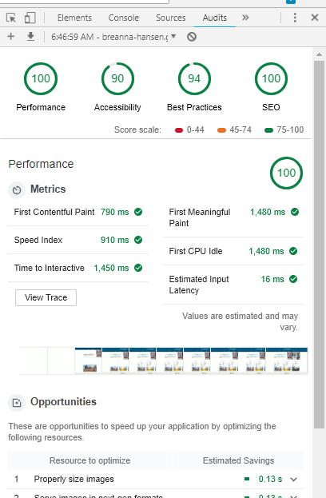

Term Website Project: Temple Inn & Suites
The term website project is designed to be a comprehensive assessment of all the course objectives. You will be given specifications as if you were contracted to plan, design, and build a prototype website for an organization. In addition, developmental specifications will be given to ensure proper assessment of the application of course content, skills, and technologies. This independent, term project will be of your own design and work, you may not consult or work with any other individual or group. The content is fictitious, but the site should be complete without any placeholders or nonsense language. Create a working site containing relevant and reasonable information. The images and brief verbiage may be referenced from other sources which will need to be cited in a resource reference page, which link will be located in the footer.
Company Description
The Temple Inn & Suites is a hotel chain headquartered in Bethesda, MD that builds and manages specialized hotel accommodations near temple locations of The Church of Jesus Christ of Latter-day Saints around the world. The owner-operated company caters to temple workers, patrons, and their families by providing specialized services and accommodations that meet the needs of those patrons. The hotel accommodations and services are available to anyone willing to abide by the terms and policies outlined by the company. The overall goal of the web site project is to promote and provide information about the specialized services that this hotel chain offers to meet the needs of temple patrons who come to serve in the temple or who participate in events such as sealings, weddings, receptions, and youth trips. The website should reflect the Church culture and be designed to support a temple oriented theme as well as the concept of being a haven of comfort and accessibility.
Some of the specialized services and features include:
- free access to changing rooms and bathroom facilities for temple patrons who have traveled far and need to change to and from church clothes
- a play room and low cost, short-term babysitting services for the children of patrons
- long term stay accommodations in kitchenette suites for full-time temple missionaries
- a temple history themed reception and sitting area
- a wedding reception hall that can be easily customized with a simple catering menu and kitchen access for food preparation and serving
- a business center that supports family search and ordinance work
Some of the free amenities include:
- breakfast
- exercise/workout room
- indoor pool
- WiFi high-speed internet access and smart tvs
- parking
- family history consultation and family ordinance card services
Specifications
The following design and content specific items are required in order to meet the functional specifications of this final project.
- The site must be responsive to small, medium, and larger, wide screen views.
- The design is consistent throughout the website providing ease of navigation and supports excellent user experiences.
- The home page is a contemporary, exciting landing page providing images of temples and temple attending activities, and must include:
- a call to action to make a hotel reservation,
- readily available navigation and contact information for the hotel chain,
- summary information about four temples,
- summary weather information on those four temple locations such as current conditions and temperature
- The temple page describes the details for at least four temples providing information about the address, telephone, email, services, history, ordinance schedule, session schedule, temple closure schedule, and summary, current weather information obtained from a third party API.
- The reservation page contains a form that collects relevant information when making a normal stay reservation including the location, date, number and type of rooms, registrant's full name, email, phone, home state or country, and special accommodations/comments.
- The services page that provides a list with information on the amenities and special services offered at the hotel along with the following sub pages/content:
- The reception page displaying information about the wedding reception accommodations including options for food service and setup.
- A full-time temple missionary page that provides information and images about the suites offered at the hotel with a simple contact us for more details form.
- The contact page will contain essential contact information including an embedded Google map showing the company headquarter address at 4800 Montgomery Ln #300, Bethesda, MD 20814 and a basic contact us form.
Developmental Specifications
The following development specifications are required in addition to the customer specifications in order to receive full credit on the term project.
- Your HTML structure and CSS presentation may not be an exact replication of your weather site.
- Structure the site with valid, standards-based, semantic markup that is responsive to small, medium and large screen views without violating PARC principles.
- Ensure that all browsers render elements consistently by referencing a normalization or reset CSS on all pages.
- Design a logo to be used at appropriate levels and locations throughout the website.
- Follow PARC principles and typography best-practices throughout the website.
- Implement an appropriate font of your choice, using a fonts.google.com reference or equivalent resource.
- Read the current temple closure schedule from a JSON file and use that information on the temple page. You will need to create the JSON file and store it under a directory(folder) on your site.
- Use the practice of wayfinding to improve the user experience of understanding where they are on the website.
- Implement an accordion menu or a horizontal slide experience to display the individual temple information components one at a time on the temples page using jQuery.
- Ensure that each page weight does not exceed the ~500k benchmark.
- Your page must pass the Chrome DevTools audit at 85% or better in the areas of performance, accessibility, best practice, and SEO for consideration for full credit. ➨
- Ensure that there are no spelling or grammatical errors.
- Include a resource page that references outside content, if necessary, as a link in the footer.
- Publish the complete, working site to your Github Pages site in an organized way.
Assessment
All course objectives and documented specifications are assessed in the term project. Use the following matrix to guide your development and testing before final submission.
| Grading Criteria 100 points possible |
|---|
| Objective 1: HTML: Develop fluency in the application of contemporary Hypertext Markup Language |
| All pages are HTML valid and use appropriate semantic elements. Heading element are used in the proper order, levels, and elements on all pages. The structure used in this project is not an exact or near exact replication of the weather site structure. |
| Objective 2: CSS: Develop fluency in the application of contemporary Cascading Style Sheets markup. |
| All pages are CSS valid. Media queries are used to ensure proper presentation in all views. The site uses normalization or equivalent. The CSS is not repeated unnecessarily between views. |
| Objective 3: JavaScript: Apply JavaScript browser interactions, get JSON data, and utilize popular libraries and frameworks. |
| The sales page uses jQuery to display a minimum of three bicycle models of different makes, one at a time, with an appropriate interface and the pricing data on the service page is read from an external JSON source and presented appropriately. No JavaScript errors found. |
| Objective 4: UX: Plan, design, and develop visually appropriate, usable, and find-able user interfaces (UI) and content. |
| The visual appearance of all pages in the site must be responsive, uniform, and consistent at three view levels. This includes using a Google font reference or equivalent resource. |
| All folders and files follow web naming rules and are friendly/semantic. |
| Use the practice of wayfinding to improve the user experience. |
| The website follows PARC and typography design principles. |
| The pages have a page weights at the 500k or less mark. |
| Images, including the custom logo, and other graphical and functional elements are the appropriate type and size and enhance the UX. |
| The registration form is complete, validates input, and utilizes the flex display property for layout. |
| All pages are given appropriate titles that not only reflect the website but also the content of the page through keywords. |
| Objective 5: Professionalism: Work effectively and independently, communicate clearly on your design and specification report, and facilitate a positive experience regardless of any self-perceived shortcomings. |
| The site is complete containing all of the functional specifications including all required content pages without spelling and grammatical errors. |